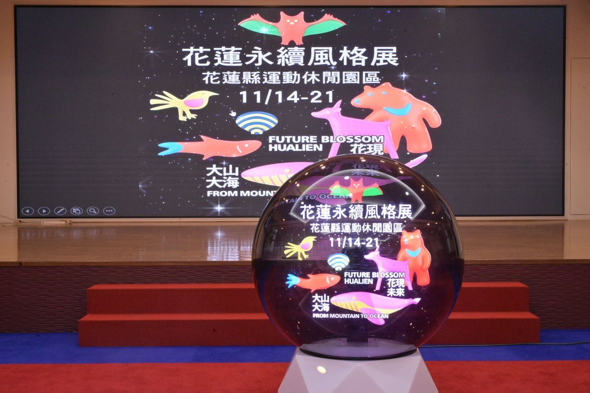

吉安野餐扭蛋免費抽！花蓮永續風格展11月14日開跑 7大野生動物帶路

可樂電子報小編/編輯
當太平洋的波瀾撞擊奇萊山脈的壯景，這片土地正以令人驚豔的當代生活美學改寫城市定義！花蓮縣政府今（15）日舉辦盛大展前記者會，由縣長徐榛蔚親自宣佈，備受期待的年度重磅大展「大山大海．花現未來」花蓮永續風格展，將於115年11月14日至11月21日一連8天，在花蓮縣運動休閒園區震撼登場。這次展覽拋棄了傳統公家機關枯燥乏味的政令宣導，全面開創以童話寓言與當代傳說為核心的沉浸式體驗，邀請全臺民眾搭乘火車至吉安站，順著微風步行8分鐘進入這座充滿驚奇的永續慶典，見證花蓮經歷8年淬鍊後的韌性重生與未來願景。

走進展覽世界，最吸睛的莫過於7隻代表花蓮生態與建設精神的在地野生動物「引路人」。主辦單位巧思將龐雜的城市治理成果轉化為生動的角色傳奇：代表蘇花改與重大交通建設突破的「臺灣長鬃山羊」、串聯海空門戶與海洋觀光驚喜的「大翅鯨」、見證河川水利治水與環境生態永續的「黃金蜆」、守護韌性城市安全與全齡健康醫療的「臺灣黑熊」、傳遞全齡社會福利與幸福支持網絡的「菊池氏細鯽」、展現多元族群與藝文底蘊的繽紛「朱鸝」，以及象徵智慧城市、數位教育與前瞻科技創新的「狐蝠」。這7隻萌翻全場的特有種明星動物，將引領每位到訪者穿梭於花蓮的過去、現在與未來。

展區核心設置了兩大特色主展館，兼具硬核科技與細膩人文。首先踏入以「韌性重生硬底子」為主題的A棟「大山大海館」，展館運用頂尖數位科技與感官互動展示，帶領民眾透過「海洋之心」裝置展開一場震撼心靈的海洋感官之旅，並打造「時光縱谷」廊道，完整呈現花蓮近8年來在基礎建設、交通路網改善、水利防災及智慧治理等層面築起的鋼鐵硬實力；隨後轉往象徵軟實力的H棟「花現未來號」，這艘造型獨特的夢想大船以專屬護照與關鍵字選書開場，劃分為「山：文化與傳統」、「田：自然農業」、「石：觀光慢城」及「浪：社福教育」四大板塊，深情訴說原民樂舞傳承、有機農業、太平洋疊石藝術季到全齡照護的感動故事，館末更溫馨打造「小石花園」，邀請民眾親手將心中的希望花種進花蓮土地。

除了室內展館的深度體驗，戶外的風格生活提案更是歡樂無限。活動期間特別規劃「山海集章護照」闖關遊戲，民眾只需穿梭園區集滿7個動物關卡印章，即可前往超大型「山海扭蛋機」免費試手氣，精美文青帆布袋、動物造型鑰匙圈及山海花主題農產體驗包等好禮驚喜大方送。此外，戶外草坪更於午後時段推出「山海療癒草地音樂會」，邀請獨立樂團與在地原住民藝文團隊接力演出；深受親子與年輕族群喜愛的「山海花蓮療癒野餐日」開放免費參加，打卡即贈精美小禮，預先報名成功者更可直接獲得限量專屬野餐盒，享受最Chill的花蓮陽光。
現場亦集結了質感滿點的「風格市集與永續生活體驗」，邀集鼓睦德原住民手工編織、馬耀咖啡等在地人氣品牌與國際永續商家進駐。現場更有高山森林基地永續講堂、親子草地遊戲、滑輪體驗、全齡伸展及阿原香氛舒壓課程等多元深度工作坊，讓每位到訪者都能找到屬於自己的放鬆步調。花蓮縣長徐榛蔚強調，花蓮的成長離不開軟實力、硬底子與真功夫的相互支撐，這是跨局處與地方鄉鎮集體智慧的結晶，感謝議會與各公所的協力，讓點滴的需求如小石般聚集成巨型夢想。
本次展前記者會產官學界貴賓雲集，包括花蓮縣議員李正文、玉里鎮鎮長龔文俊、秀林鄉代理鄉長孔文吉、立委傅崐萁辦公室主任王怡方、多位青年諮詢委員及縣府局處首長等均親自到場，與徐縣長一同啟動象徵永續綻放的儀式，並搶先體驗「山海集章護照」與視覺裝置。展覽地點位於花蓮縣吉安鄉中山路一段195號（花蓮縣運動休閒園區），全園區免費開放，縣府熱情邀約全國民眾於11月14日至21日安排一趟花蓮永續小旅行，跟著7大動物引路人一起體驗這座城市的重生與美好。
📸 更多現場紀實影像